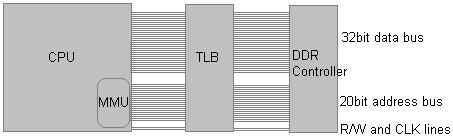

Physical Memory
Welcome!
In this tutorial we will be looking at managing one of our most important resources within a computer system: Physical Memory. We will be looking at how to get memory information, some more BIOS interrupts, memory manager concepts, and the design and implimentation for our complete physical memory manager.
This is one of those things that no one likes to do--but in the end it makes things much easier to work with. With that in mind, lets take a look at the list for this tutorial:
- Physical Memory
- Translation Lookaside Buffer (TLB)
- Memory Management Unit (MMU)
- Memory Managers
- Abtaining memory information
- Passing information from bootloader to kernel
- Designing and developing a physical memory manager
Alirighty then! Notice that I am not covering paging or virtual memory here. Instead, I want to keep the concepts of physical memory management and virtual memory management completely separate. The reasons for this is simplicity; we can focus on one without the other. Don't worry--we will cover paging and virtual memory in the next tutorial when we cover the development of a virtual memory manager.
Memory: A deeper look
Rather then jumping directly into memory management, I want to take a different approch here. That is, How can we even understand what memory management is about without even understanding what memory itself is? That is, we should know what is it that we are trying to manage, right?
Because of this, we will first look at what physical memory is first. You know... Those little RAM chips inside of your computer? 😀
Here we go...!
The Physical Memory
Physical Memory: Abstract
Physical Memory is an abstract block of memory stored within the computers Random Access Memory (RAM). The way physical memory is "stored" within the RAM depends on the type of RAM the system uses. For example, Dynamic Random Access Memory (DRAM) stores each bit of data in its own capacitor that must be refreshed periodically. A capacitor is an electronic device that stores a current for a limited time. This allows it to either store a current (a binary 1), or no current (a binary 0). This is how DRAM chips store individual bits of data in a computer.
Most of the time, the memory types (RAM, SRAM, DRAM, etc.) require a specific type of Memory Controller to interface with the processor and System Bus.
The Memory Controller provides a way of reading and writing memory locations through software. The Memory Controller is also responsible for the constant refreshing of the RAM chips to insure they retain their information.
Memory Controllers contain Multiplexer and Demultiplexer circuits to select the exact RAM chip, and location that refrences the address in the Address Bus. This allows the processor to refrence a specific memory location by sending the memory address through the address bus.
...This is where the software come in, as they tell the processor what memory address to read 😀
The Memory Controller selects the location within the RAM chip in a sequence manner. This means, if we access a physical memory location greater then the total amount of memory in the system, nothing will happen. That is, you can write a value to that memory location and read it back--you will get whatever left over data on the data bus.
It is possible for memory holes to appear in the Physical Address Space. This can happen if, for example, a RAM chip is in slots 1 and 3, with no RAM chip in slot 2. This means that there is an area of memory between the last byte stored in the RAM at slot 1 and the first byte-1 in slot 3 that does not exist. Reading or writing to these locations have almost the same effect when reading or writing beyond memory. If this nonexistant memory location has been remapped by the memory controller, you may be reading or writing to a different part of memory. If the memory has not been remapped (Which most of memory is not), Reading or writing to a memory location that does not exist does nothing at all. That is, writing to the non existant memory location will not write anything anywhere, reading from a non existant memory location reads whatever garbage was left over on the data bus. Knowing that writing a value to a non existant location and reading it back will NOT yeld the same value, methods have come up of manually parsing memory via pointers to determin what areas of memory are good or not. However, doing this can be dangerous as we will look at later.
Well, Thats all for what physical memory really is. Knowing how memory stores each bit you can probably start seeing where the bytes, words, dword, qwords, tbytes, etc.. start to come in. The most important of these are the byte, as that is the smallest data that the processor can access. But how does the processor know where a byte is located in memory? This is where the Physical Address Space comes in. Lets take a look 😀
Physical Address Space (PAS)
This is the address space used by the processor (and translated by the memory controller) to refer to an 8 bit peice of data (ie, a byte) stored in physical memory (RAM). A Memory Address is just a number selected by the Memory Controller for a byte of data. For example, memory address 0 can refer to the first 8 bits of physical memory, memory address 1 can refer to the next 8 bits, and so on. The Physical Address Space is the array of these memory addresses and the actual memory that the memory addresses refer to.
The physical address space is accessed by the processor through the systems address bus (Remember this from [Chapter 7] (fix link OSDev7.html)?)
Okay, so lessee... the processor now can use an address to refer to a byte of memory. It useually starts from address 0, and increments for each byte in memory. Thats as simple as it can get! But, it still doesnt describe how the software can access memory. Sure, the processor itself now has a way of refrencing memory, but the software does not. The processor, depending on its needs, need to provide specific ways for software to provide software a way to refrence memory. Wait, what? Thats right... different ways of addressing and accessing memory...
Addressing Modes
The Addressing Mode is an abstraction made by the processor to manage how the software accesses the Physical Address Space. This useually allows the software to set up the processors' registers so the processor knows how to refrence memory. We have already seen two: segment:offset memory addressing and descriptor:offset memory addressing.
This is the interface given by the processor for the software to allow a way to access memory.
We have covered the segment:offset addressing mode in [Chapter 4] (fix linkOSDev4.html) and the descriptor:offset memory addressing mode in [Chapter 8] (fix linkOSDev8.html).
How Memory Works: Detail
Okay, now lets look at memory in a new way. We have already covered alot of details on what memory is, address space and addressing modes. Now, lets put everything together, shall we?
Alot of the information in this section is not needed, but I decided to include it for completness sake. Don't worry to much if you do not understand everything here.
In [Chapter 7] (fix link OSDev7.html), we have looked at a basic overview of a computer system and system architecture. We have talked about how the processor's system bus connects to the memory controller which is used to provide the system a way to control physical RAM. Kind of like this:

Thats it! This is how the physical RAM connects and communicates with the rest of the system. In the above image, the DDR Controller is the memory controller. The Translation Lookaside Buffer (TLB) sits between the memory controller and processor. With this, the system bus connects all three of them through its address bus, data bus and control bus. The only 2 lines from the control bus that are important to us right now are the RW line and CLK line.
The TLB is only used when paging is enabled. Because of this, we will look at it a little more later.
Okay, so what actually happens when we write data to a physical memory location? During a write operation, the processor sets the RW pin to high (a logical 1). This tells the devices it connects to that a write operation is to take place. The processor resets the IO Control line to low (a logical 0). This insures the IO SubSystem ignores the command (Meaning its not an IN/OUT port instruction), but rather for the memory controller. The processor then copies the address to write to onto the address bus and the data to write onto the data bus. Because these lines are connected indirectly to the memory controller, the memory controller is able to see it is a write operation. So, all the memory controller needs to do is translate the memory address on the address bus using its demultiplexer circuit to find the RAM chip to use, and linear offset byte into the RAM chips memory space. The memory controller then copies the data from the data bus to this location, and refreshes the memory state on the next clock signal.
During a read operation it follows almost the same process as a write operation. Except, the RW line is set low to indicate a read operation. Also, the memory controller, after translating the memory address into an offset into the RAM chip, copies the data stored in that location and places it on the data bus for the processor. The memory controller then refreshes the memory state on the next clock signal.
The CLK signal is used to synchronize the exchange of addresses and data values through the reads and writes. Communication with the memory chip is started when the CLK line is a logical 1 (set high). During this period that the CLK line is held high the address is placed on the address lines and the R/W line is either taken high for a write or low for a read.
During execution the processor will constantly be flipping the clock line high and low in order to perform reads and writes with the memory controller.
While paging is disabled, the TLB itself does nothing at all. Notice that the TLB is not used at all when reading or writing memory.
Physical Memory Managers
As you may know, managing memory is critically important. All of our data and code share the same physical address space. If we attempt to load and work with more data or programs, we will need to some how find a way of managing memory to allow this.
At this stage, our kernel has full control of all of the hardware and memory in your computer. This is great but bad at the same time. We have no way of knowing what areas of memory are currently in use nor what areas are free. Because of this, there is no real way of working with memory without the possibility of problems: program corruption, data corruption, no way of knowing how memory is mapped, triple faults or other exception errors, etc... The results may be unpredictable.
Because of this, effectivly managing physical memory is very important. Lets look closer!
Detecting Memory
Abstract (Detecting Memory)
The first thing we need to do is abtain the amount of RAM inside of the computer system. There are alot of different ways to do this. Some methods may work on some systems while others may not.
Getting the amount of memory can be very system dependent. More specifically, motherboard chipset dependent. During initialization, the BIOS abtains memory information from the memory controller and configures the chipset to work with the detected memory. Because of this, Operating systems need to go through the system BIOS to abtain this information. But Wait! I thought we were not able to use the Bios in protected mode!? Thats right...we can't. Instead we must get this information some other way... The bootloader, perhaps?
I should point out that there is indeed other methods that we can do to abtain the amount of memory within the system. For example, the CMOS, PnP, and SMBios. However the only way to guarantee that you get the correct amount is from the device that configuares it: The BIOS.
The last thing to note here is that all PCs are required to have a memory region just below the 4 GB mark for use by additional possible devices (Memory mapped hardware or the BIOS ROM). We will look at how to get around this a little later, don't worry 😀
"Low Memory", otherwise known as Conventional Memory is memory below the 1MB mark. Memory above 1MB is known as Extended Memory.
With all of that in mind, lets take a look at some nice Bios interrupts to help us out...
Bios: Getting Memory Size
All of the following routines can be found in memory.inc in the demo at the end of this tutorial inside of the 2nd stage boot loader.
BIOS INT 0x12 - Get Memory Size (Conventional Memory)
Return
CF = Clear if successful
AX = Number of KB conventional memory
AH = status if error (0x80: Invalid command; 0x86) Unsupported function
This is quite possible the easiest method. This interrupt returns the value found in the BIOS data area (The word at physical address 0x413). Because it returns a WORD sized value, it is limited to 0xFFFF (65535 decimal). That is, it will only detect memory below 64KB. Because of this, on systems with more then 64KB of memory, it will not return the correct size. Thus, I will not be using this method.
While this method may not return the complete memory size, it is quite possibly the only one guranteed to work on almost all, if not all, PCs.
BiosGetMemorySize:
int 0x12
jc .error
test ax, ax ; if size=0
je .error
cmp ah, 0x86 ;unsupported function
je .error
cmp ah, 0x80 ;invalid command
je .error
ret
.error:
mov ax, -1
ret
BIOS INT 0x15 Function 0x88 - Get Extended Memory Size
Return (BIOS INT 0x15 Function 0x88)
CF = Clear if successful
AX = Number of contiguous KB starting at 1MB physical address
AH = status if error (0x80: Invalid command; 0x86) Unsupported function
This interrupt returns the amount of KB extended memory in AX. Because it uses 16 bit registers, it is limited to returning 64MB, or 0xFFFFF (65535). On some versions of Windows, this function may return 15MB instead.
BiosGetExtendedMemorySize:
mov ax, 0x88
int 0x15
jc .error
test ax, ax ; if size=0
je .error
cmp ah, 0x86 ;unsupported function
je .error
cmp ah, 0x80 ;invalid command
je .error
ret
.error:
mov ax, -1
ret
BIOS INT 0x15 Function 0xE881 - Get Memory Size For > 64 MB Configuations (32 Bit)
Return (BIOS INT 0x15 Function 0xE881)
CF = Clear if successful
EAX = Extended memory between 1MB and 16MB in KB
EBX = Extended memory above 16MB, in 64KB blocks
ECX = Configured memory 1MB to 16MB in KB
EDX = Configured memory above 16MB in 64JB blocks
This interrupt is exactally like INT 0x15 Function 0xE801 except it uses the extended registers (EAX/EBX/ECX/EDX).
BIOS INT 0x15 Function 0xE801 - Get Memory Size For > 64 MB Configuations
Return (BIOS INT 0x15 Function 0xE801)
CF = Clear if successful
EAX = Extended memory between 1MB and 16MB in KB
EBX = Extended memory above 16MB, in 64KB blocks
ECX = Configured memory 1MB to 16MB in KB
EDX = Configured memory above 16MB in 64JB blocks
This is the method that I tend to use. This interrupt is used by both Windows NT and Linux during boot up to detect memory size if INT 0x15 function 0xe820 is not supported (Get System Memory Map). We will look at that later. This method has been around since around 1994 so older systems may not support this method.
The "Extended Memory" and "Configured Memory" values are almost always the same. Some BIOSs may store the results in either EAX and EBX or ECX and EDX. In other words, some BIOS may use EAX and EBX but leave ECX and EDX alone. Other BIOSs may do the exact opposite. Yey for standards! 😀 Uh, okay...Sorry 😉
The typical way of using this method is to null out all of the general-purpose registers first before calling the BIOS. This way, after the BIOS call, we can test if a register is null or not so we know what pair of registers to use: EAX/EBX or ECX/EDX:
;---------------------------------------------
; Get memory size for >64M configuations
; ret\ ax=KB between 1MB and 16MB
; ret\ bx=number of 64K blocks above 16MB
; ret\ bx=0 and ax= -1 on error
;---------------------------------------------
BiosGetMemorySize64MB:
push ecx
push edx
xor ecx, ecx ;clear all registers. This is needed for testing later
xor edx, edx
mov ax, 0xe801
int 0x15
jc .error
cmp ah, 0x86 ;unsupported function
je .error
cmp ah, 0x80 ;invalid command
je .error
jcxz .use_ax ;bios may have stored it in ax,bx or cx,dx. test if cx is 0
mov ax, cx ;its not, so it should contain mem size; store it
mov bx, dx
.use_ax:
pop edx ;mem size is in ax and bx already, return it
pop ecx
ret
.error:
mov ax, -1
mov bx, 0
pop edx
pop ecx
ret
Notice what this routine returns. In order for us to get the amount of KB in the system, we need to do some math. EBX contains the number of 64KB blocks of memory. If we multiply this by 64, we effectivly convert the value in EBX into the amount of KB above 16MB. Afterwords, simply add this number to the number returned in EAX to get the amount of KB above 1MB. Knowing there is 1024 KB in a one megabyte, add 1024 to this number and we now have the total amount of KB in the system!
Manually Probing Memory
Manually probing memory means to manually detect memory from a pointer by directly accessing memory. While it is possible that doing this may detect all of memory, it is also the most dangerous. Remember that there may be devices that we may or may not know of that uses regions of memory for different things. There may also be memory mapped devices, the ROM BIOS, and other devices that use memory. We also have not taken into account memory holes within the physical address space.
To directly probe memory comes from the fact that reading or writing to nonexistant memory does nothing. That is, if you write to a physical memory address that does not exist, you will not get an error. However, if you attempt to read from that same location again, the value that you get back may be completely random garbage--whatever was left on the data bus.
Thus to probe memory, just go into a loop for every 1k (or so) of memory. Use a pointer to read and write to a memory location. Continue incrementing the pointer (Hence reading from another location in memory) until the value read from the pointer containes an invalid value.
I might create a little demo code for this method, but we would probably never use it do to its many problems. I decided to include this method as it is a method to detect memory, although it is the most unsafe method to use and can cause unpredictable results. Use at your own risk!
Getting the Memory Map
Yippie! Now we have gotten the amount of memory in the system. But Wait! Not all of this memory is available to us, remember?
This is where a Memory Map comes in. A memory map defines what regions of memory are used for what. Using this, we can also abtain what regions that are safe for us to use.
BIOS INT 0x15 Function 0xE820 - Get Memory Map
Input
EAX = 0x0000E820
EBX = continuation value or 0 to start at beginning of map
ECX = size of buffer for result (Must be >= 20 bytes)
EDX = 0x534D4150h ('SMAP')
ES:DI = Buffer for result
Return (BIOS INT 0x15 Function 0xE820)
CF = clear if successful
EAX = 0x534D4150h ('SMAP')
EBX = offset of next entry to copy from or 0 if done
ECX = actual length returned in bytes
ES:DI = buffer filled
If error, AH containes error code
Address Range Descriptor
The buffer used by this interrupt as an array of descriptors that follow the following format:
struc MemoryMapEntry
.baseAddress resq 1 ; base address of address range
.length resq 1 ; length of address range in bytes
.type resd 1 ; type of address range
.acpi_null resd 1 ; reserved
endstruc
Types of Address Ranges
The types of address ranges defined for this function is shown below:
- 1: Available Memory
- 2: Reserved, do not use. (e.g. system ROM, memory-mapped device)
- 3: ACPI Reclaim Memory (usable by OS after reading ACPI tables)
- 4: ACPI NVS Memory (OS is required to save this memory between NVS sessions)
- All other values should be treated as undefined.
Code to get the Memory Map
This interrupt might seem a little complex, but its not to bad.
First take a look at the inputs that this interrupt requires. We put the function number (0xe820), of course, in AX. However some BIOSs require that the upper half of EAX is zero. Because of this, you should us EAX here instead of AX.
Also notice that EDX must contain the value of 'SMAP'. This is another requirement. Some BIOSs may trash this register after calling the interrupt.
Okay... When we execute this interrupt, the BIOS will return a single entry of the memory map (This entry has a format. Please see the Address Range Descriptor above). If, after calling the interrupt, EBX is NOT zero, then there are more entries in the memory map. We will need to loop for each entry in the map. If the entry length is 0, then skip the entry as there is nothing there and go to the next entry in the list until we reach the end.
This routine uses the MemoryMapEntry structure we have defined above to get information from the entries that we abtain from the bios.
;---------------------------------------------
; Get memory map from bios
; /in es:di->destination buffer for entries
; /ret bp=entry count
;---------------------------------------------
BiosGetMemoryMap:
pushad
xor ebx, ebx
xor bp, bp ; number of entries stored here
mov edx, 'PAMS' ; 'SMAP'
mov eax, 0xe820
mov ecx, 24 ; memory map entry struct is 24 bytes
int 0x15 ; get first entry
jc .error
cmp eax, 'PAMS' ; bios returns SMAP in eax
jne .error
test ebx, ebx ; if ebx=0 then list is one entry long; bail out
je .error
jmp .start
.next_entry:
mov edx, 'PAMS' ; some bios's trash this register
mov ecx, 24 ; entry is 24 bytes
mov eax, 0xe820
int 0x15 ; get next entry
.start:
jcxz .skip_entry ; if actual returned bytes is 0, skip entry
.notext:
mov ecx, [es:di + MemoryMapEntry.length] ; get length (low dword)
test ecx, ecx ; if length is 0 skip it
jne short .good_entry
mov ecx, [es:di + MemoryMapEntry.length + 4]; get length (upper dword)
jecxz .skip_entry ; if length is 0 skip it
.good_entry:
inc bp ; increment entry count
add di, 24 ; point di to next entry in buffer
.skip_entry:
cmp ebx, 0 ; if ebx return is 0, list is done
jne .next_entry ; get next entry
jmp .done
.error:
stc
.done:
popad
ret
Multiboot Specification
I do not plan on covering the multiboot specification too soon. Mabey in the future, but not now. However, we need a way to pass the information that we abtained from the BIOS inside of our bootloader to our Kernel. We can do this any way that we want. Because the multiboot specification defines a standard boot time information structure, and I dont know if we will fully support the multiboot standard, I decided why not use the same structure?
Also, if you decide to use another boot loader (Such as GRUB), we can have it boot our kernel as well.
Anyways, the entire specification itself is rather large, so covering it in a tutorial about memory management is not a good idea 😉 Thus, I will cover just enough so we can use it to pass the information that we need, sound cool?
Abstract
The Multiboot specification is a list of standards used to describe standards for boot loaders for loading and executing operating system kernels. This specification makes it easier to boot multiple operating systems because the specification describes a standard state that the machine must be in before the operating system takes control. This also includes how and what information is passed from the bootloader to the kernel.
I will not be covering the complete multiboot specification right now. However, we will be looking at what the machine state must be in when the kernel is executed. We will also be looking a little bit at the Multiboot information structure which containes the information passed from the boot loader to the kernel. We will also be using this structure to pass our bootloader memory information using this structure as well.
Machine State
The Multiboot specification states that, when we invoke a 32 bit operating system (That is, execute our kernel), the machine registers must be set to a specific state. More specifically: When we execute our kernel, set up the registers to the following values:
- EAX - Magic Number. Must be 0x2BADB002. This will indicate to the kernel that our boot loader is multiboot standard
- EBX - Containes the physical address of the Multiboot information structure
- CS - Must be a 32-bit read/execute code segment with an offset of
0and a limit of0xFFFFFFFF. The exact value is undefined. - DS,ES,FS,GS,SS - Must be a 32-bit read/write data segment with an offset of
0and a limit of0xFFFFFFFF. The exact values are all undefined. - A20 gate must be enabled
- CR0 - Bit 31 (PG) bit must be cleared (paging disabled) and Bit 0 (PE) bit must be set (Protected Mode enabled). Other bits undefined
All other registers are undefined. Most of this is already done in our existing boot loader. The only additional two things we must add are for the EAX register and EBX.
The most important one for us is stored in EBX. This will contain the physical address of the multiboot information structure. Lets take a look!
Multiboot Information Structure
This is possibly one of the most important structures contained in the multiboot specification. The information in this structure is passed to the kernel from the EBX register, This allows a standard way for the boot loader to pass information to the kernel.
This is a fairly big structure but isnt to bad. Not all of these members are required. The specification states that the operating system must use the flags member to determin what members in the structure exist and what do not.
struc multiboot_info
.flags resd 1 ; required
.memoryLo resd 1 ; memory size. Present if flags[0] is set
.memoryHi resd 1
.bootDevice resd 1 ; boot device. Present if flags[1] is set
.cmdLine resd 1 ; kernel command line. Present if flags[2] is set
.mods_count resd 1 ; number of modules loaded along with kernel. present if flags[3] is set
.mods_addr resd 1
.syms0 resd 1 ; symbol table info. present if flags[4] or flags[5] is set
.syms1 resd 1
.syms2 resd 1
.mmap_length resd 1 ; memory map. Present if flags[6] is set
.mmap_addr resd 1
.drives_length resd 1 ; phys address of first drive structure. present if flags[7] is set
.drives_addr resd 1
.config_table resd 1 ; ROM configuation table. present if flags[8] is set
.bootloader_name resd 1 ; Bootloader name. present if flags[9] is set
.apm_table resd 1 ; advanced power management (apm) table. present if flags[10] is set
.vbe_control_info resd 1 ; video bios extension (vbe). present if flags[11] is set
.vbe_mode_info resd 1
.vbe_mode resw 1
.vbe_interface_seg resw 1
.vbe_interface_off resw 1
.vbe_interface_len resw 1
endstruc
Alot of information in this structure! Most of this does not apply to use, so we will only focus on a few. memLo and memHi containes the amount of memory we detected from the BIOS. mmap_length and mmap_addr will point to the memory map that we abtained from the BIOS.
Thats it! Now we have a nice way of passing our memory information (And mabey more 😉 ) to the kernel:
mov eax, 0x2BADB002 ; multiboot specs say eax should be this
mov ebx, 0
mov edx, [ImageSize]
push dword boot_info
call ebp ; Execute Kernel
add esp, 4
cli
hlt
...And inside of our kernel:
//! kernel entry point is called by boot loader
void __cdecl kernel_entry (multiboot_info* bootinfo) {
//*snip*
}
The kernels multiboot_info structure is the same one shown above but in C. Thanks to this setup, all the kernel needs to do is access the memory information (And any information passed from the bootloader) through bootinfo. Cool, huh?
Now that we got the memory information from the Bios and passed it to the kernel, the kernel can use it for its physical memory manager. Thats right...Its finally time to develop a physical memory manager!
Physical Memory Management
We have covered alot already, don't you think? We have looked at how to abtain memory information from the BIOS and using the multiboot information structure to pass this information to the kernel. This allows the kernel to be able to retrieve this memory information anytime it wants. Yet, we have yet to cover the most important topic: Managing this memory. Lets look closer...
Memory Management: Abstract
Okay, so we know we need a way to manage memory. To do this, we--of course--need a way of keeping track of how memory is being used. Doing this for every byte in memory is simply not possible: How can we store information about every byte in memory without running out of memory? Because of this, we need to come up with another way.
What we need to insure is that, whatever data structure we use to manage the rest of memory, is smaller then the total size of memory. For example, we can use an array of bytes, for example. Every byte can store information about a larger block of memory. This is the only way we can insure we do not run out of memory.
The size of a "block" of memory must be a feasable and efficiant size. Using this method, we can split up the physical address space into "block" sized chunks. When we allocate memory, we do not allocate bytes. Rather, we allocate blocks of memory. This is what a physical memory manager does.
The purpose of a physical memory manager is to split up the computers physical address space into block-sized chunks of memory and provide a method to allocate and release them.
On the x86 architecture, when paging is enabled, each page represents a 4KB block of memory. Because of this, to keep things simple, each memory block for our physical memory manager will also be 4KB in size.
Setting up
Allright...We know that a physical memory manager is important. We also know that the physical memory manager needs to split up the physical address space and keep track of what memory blocks are being used or available. But wait! We immediately run into a problem: The kernel needs an area of memory for managing memory. How can we allocate an area of memory before we can allocate memory?
We cant. Because of this, the only method that we have is using a pointer to a location in memory. Think of this location as simply some more reserved memory, simular to the BIOS, Bios Data Area (BDA) and the kernel itself. We want to stick this somewhere in reserved memory, so how about at the end of the kernel? Afterwords, we can mark this region (along with the kernel itself) as reserved within the data structure to insure nothing touches it.
Great! Now that we have a pointer to some location in memory, we can store the information needed to keep track of each block in memory. But...how? That is, all we have is a pointer. The data this pointer points to must be in some useable structure so that we can use the area of memory effectivly. How can we create a structure to manage all of physical memory?
There are two common solutions to this: Stack or a bit map.
Stack based allocation
Bit map based allocation
This is the simplest to impliment. All our physical memory manager needs to know is if a block of memory is allocated or not. If it is allocated, we can use a binary bit 1. If it is not, a binary bit 0. In other words, for every block in memory, we use a single bit to represent if it has been allocated or not. This is the method that we will be using. However, the physical memory manager is designed in a way to allow other methods (Like the stack-based approch) if we decide too switch. 😉
The bit map approach is very efficiant in size. Because each bit represents a block of memory, a single 32 bits using this bit map approach represents 32 blocks. Because 32 bits is 4 bytes, this means we can watch--out of 32 blocks of memory--using only 4 bytes of memory.
This approach is a bit slower though as it requires searching the bit map for a free block (The first bit that is 0) every time we want to allocate a block of memory.
Developing a Physical Memory Manager (PMM)
In the upcoming demo code, the entire physical memory manager can be found in mmngr_phys.h and mmngr_phys.cpp. It may also help to study the updated 2nd stage boot loader to see how the memory information is passed from the boot loader to the kernel, and how the kernel initializes the PMM.
Globals and Constants
I never like "magic numbers" as you may have noticed 😉 This is why I tend to hide all of these numbers behind more readable constants.
//! 8 blocks per byte
#define PMMNGR_BLOCKS_PER_BYTE 8
//! block size (4k)
#define PMMNGR_BLOCK_SIZE 4096
//! block alignment
#define PMMNGR_BLOCK_ALIGN PMMNGR_BLOCK_SIZE
These are just to help with the readability of the code. The PMM creates an abstraction known as a Memory Block. A Memory Block is 4096 bytes in size (4K). This is important as it is also the size of a page when we enable paging.
There are also several globals defined for keeping track of everything.
//! size of physical memory
static uint32_t _mmngr_memory_size=0;
//! number of blocks currently in use
static uint32_t _mmngr_used_blocks=0;
//! maximum number of available memory blocks
static uint32_t _mmngr_max_blocks=0;
//! memory map bit array. Each bit represents a memory block
static uint32_t* _mmngr_memory_map= 0;
The most important of these is _mmngr_memory_map. This is a pointer to the bit map structure that we use to keep track of all of physical memory. _mmngr_max_blocks containes the amount of memory blocks available. This is the size of physical memory (Retrieved from the BIOS from the boot loader) divide by PMMNGR_BLOCK_SIZE. This essentally divides the physical address space into memory blocks (Remember this from before?) _mmngr_used_blocks containes the amount of blocks currently in use, _mmngr_memory_size is for refrence only--it containes the amount of physical memory in KB.
Memory Bit Map
Okay then! _mmngr_memory_map is a pointer to an uint32_t...right? Well, of course... sort of. Rather, we should think of it as "a pointer to a series of bits" as that is the way we treat it. Each bit is a 0 if that block has not been allocated (Useable) or a 1 if it is reserved (In use). The number of bits in this array is _mmngr_max_blocks. In other words, each bit represents a single memory block, which in turn, is 4KB of physical memory.
Knowing this, all we need to do with the bit map is be able to set a bit, unset a bit, and test if a bit is set. Lets take a look...
mmap_set () - Sets a bit in the bit map
What we want to do is provide a way so that we can think of the memory map as an array of bits rather then an array of ints. This is not to hard:
inline void mmap_set (int bit) {
_mmngr_memory_map[bit / 32] |= (1 << (bit % 32));
}
The bit is a value from 0...x, where x is the bit that we want to set in the memory map. We divide the bit by 32 to get the integer index in _mmngr_memory_map that the bit is in.
To use this routine, simply call it passing in the bit that you want to set. You are not limited to 32 bits: mmp_set(62) sets the 62nd bit in the memory map bit array.
mmap_unset () - Unsets a bit in the bit map
This is very simular to the above routine but clears the bit instead:
inline void mmap_unset (int bit) {
_mmngr_memory_map[bit / 32] &= ~ (1 << (bit % 32));
}
mmap_test () - Test if a bit is set
This routine simply returns true if a bit is 1 or false if it is 0. It is very simular to the above routine, but instead of setting the bit we use it as a mask and return its value:
inline bool mmap_test (int bit) {
return _mmngr_memory_map[bit / 32] & (1 << (bit % 32));
}
Thats all too it! Now that we have a way to set, unset, and test bits inside of the bit map, we need a way of searching through the bit map for free bits. These will be used so we can find free memory blocks that we can use.
mmap_first_free () - Returns index of first free bit in bit map
This routine is a little complex. We have a way to set, clear, and test a bit in the memory bit map. Lets say that we want to allocate a block of memory. How do we find a free block of memory? Thanks to our bit map, all we need to do is traverse the bit map for a bit that is not set. This isnt to complex:
int mmap_first_free () {
//! find the first free bit
for (uint32_t i=0; i< pmmngr_get_block_count() / 32; i++)
if (_mmngr_memory_map[i] != 0xffffffff)
for (int j=0; j<32; j++) { //! test each bit in the dword
int bit = 1 << j;
if (! (_mmngr_memory_map[i] & bit) )
return i*4*8+j;
}
return -1;
}
pmmngr_get_block_count() returns the maximum number of memory blocks in this system (Remember this is also the number of bits in the bit array?) We divide this by 32 (32 bits per dword) to get the amount of integers in ths bit map. In other words: The outmost loop simply loops through each integer in the array.
We then test to see if the dword is all set. We loop this in dwords rather then bits because it is much more efficiant and faster. We test it by insuring its not 0xffffffff. If it is, go on to the next dword. If it is not, then a bit must be clear. Afterwords we simply go through each bit in that dword to find the free bit and returns its physical frame address.
The physical memory manager includes another version of this routine-- mmap_first_free_s() that returns the index of the first free series of frames of a specific size. This allows us to insure a certain region of memory blocks are free rather then a single block. This routine is a little tricky I admit; if any of our readers do not understand the code I would be glad to describe it in more detail in this tutorial.
Physical Memory Allocater
We now have a way of managing memory. Wait, what? Thats right. The way this works is to remember that each bit in the bit map represents 4KB of physical memory. If we want to allocate the first memory block (The first 4k) just set bit 0. If you want to allocate the second 4k, just set bit 1. This continues to the end of memory. This provides a way for us to not only work in 4k blocks of memory, but also to know what memory is currently in use or reserved (The bit is 1) or free for use (Bit 0). All of this provided by the three simple routines above and our bit map array. Cool, huh?
Now we just need the actual allocation and deallocation routines. Before that, however, we need to initialize the bit map regions to that of the BIOS memory map. And even before THAT, we need to provide a way so the kernel can provide some information for our physical memory manager to use. Lets take a look...
pmmngr_init () - Initialize the physical memory manager
This routine is called by the kernel to initialize the physical memory manager (PMM). memSize is the maximum amount of memory the PMM is allowed to access. This should be the size of RAM in KB passed to the kernel from the bootloader. bitmap is the location that the PMM will use for its memory bit map structure. Another important thing to note is how we set all the bits in the memory bit map using a memset() call. There is a reason for this which will be looked at very soon.
void pmmngr_init (size_t memSize, physical_addr bitmap) {
_mmngr_memory_size = memSize;
_mmngr_memory_map = (uint32_t*) bitmap;
_mmngr_max_blocks = (pmmngr_get_memory_size()*1024) / PMMNGR_BLOCK_SIZE;
_mmngr_used_blocks = pmmngr_get_block_count();
//! By default, all of memory is in use
memset (_mmngr_memory_map, 0xf, pmmngr_get_block_count() / PMMNGR_BLOCKS_PER_BYTE );
}
pmmngr_init_region () - Initializes a region of memory for use
Remember the memory map? We do not know what areas of memory are safe to work with, only the kernel does. Because of this, by default all of memory is in use. The kernel abtains the memory map from the kernel and uses this routine to initialize available regions of memory that we can use.
The routine is very simple. It just finds out how much memory blocks to set and loops--clearing the appropariate bits in the memory bit map. This allows the allocation routines to use these now free areas of memory again:
void pmmngr_init_region (physical_addr base, size_t size) {
int align = base / PMMNGR_BLOCK_SIZE;
int blocks = size / PMMNGR_BLOCK_SIZE;
for (; blocks>0; blocks--) {
mmap_unset (align++);
_mmngr_used_blocks--;
}
mmap_set (0); //first block is always set. This insures allocs cant be 0
}
Notice the call to mmap_set() at the end. In our PMM, the first memory block block will always be set. This insures us that the PMM can return null pointers for allocation errors. This also insures that any data structures defined within the first 64 KB of memory are not overwritten or touched, including the Interrupt Vector Table (IVT) and Bios Data Area (BDA).
pmmngr_deinit_region () - Deinitializes a region of memory for use
This routine is simular to the above routine, but sets the bits instead of clearing them. Because the bits become a binary 1, that 4KB block of memory the bit represents is effectivly set to reserved so that area of memory will never be touched when this routine is called.
void pmmngr_deinit_region (physical_addr base, size_t size) {
int align = base / PMMNGR_BLOCK_SIZE;
int blocks = size / PMMNGR_BLOCK_SIZE;
for (; blocks>0; blocks--) {
mmap_set (align++);
_mmngr_used_blocks++;
}
}
Woohoo! Now that we have a way to initialize and deinitialize regions of memory for use, and initialize the PMM we can work on allocating and deallocating blocks next!
pmmngr_alloc_block () and pmmngr_alloc_blocks () - Allocates a single block of physical memory
To allocate a block of memory is very simple. All of physical memory is already there, all we need to do is return a pointer to a free block of memory. We can find a free block of memory by looking through the bit map using out mmap_first_free() routine. Also notice that we call mmap_set to set the same frame returned from mmap_first_frame (). This is what marks that block of memory just allocated is now "in use". This routine returns a void* to the 4KB of physical memory just allocated.
void* pmmngr_alloc_block () {
if (pmmngr_get_free_block_count() <= 0)
return 0; //out of memory
int frame = mmap_first_free ();
if (frame == -1)
return 0; //out of memory
mmap_set (frame);
physical_addr addr = frame * PMMNGR_BLOCK_SIZE;
_mmngr_used_blocks++;
return (void*)addr;
}
The PMM also containes another allocation routine: pmmngr_alloc_blocks(). This routine is almost exactally like the above so I decided to leave it out of this tutorial for space purposes. It provides a way to allocate a sequencial amount of blocks rather then a single block.
pmmngr_free_block () and pmmngr_free_blocks () - Releases a block of physical memory
Alright...We now have a way to allocate blocks of physical memory. Now we need a way to free these blocks of memory so we do not run out of memory. This is too easy:
void pmmngr_free_block (void* p) {
physical_addr addr = (physical_addr)p;
int frame = addr / PMMNGR_BLOCK_SIZE;
mmap_unset (frame);
_mmngr_used_blocks--;
}
pmmngr_free_blocks() works almost the same way but is used in conjunction with pmmngr_alloc_blocks() used to free a sequencial amount of blocks rather then a single block.
Demo
The Physical Memory Manager running in VirtualPC
Demo Download (MSVC++)
I decided to spice things up a little. The memory map from Bochs is boring 😉 This demo is quite nice in a way that you can run it on alot of different machines and see how different computer systems map the regions of physical memory. This demo should work with all optomization levels as well.
This demo uses the passed multiboot information structure from the bootloader to get the size of physical memory. My VirtualPC is set to use 130 MB of memory so I would say it detected it pretty well 😀
There is alot going on in this demo. Some updates in the second stage boot loader is used to detect memory using the methods we looked at above, and passes this information to the kernel using the multiboot information structure in which we looked at above, remeber?
Play around with the allocations and deallocations and study the way the code works. If any of the allocation routines return null (0) then it indicates that there is no more free blocks left. If you are out of memory, try to free some memory or allocate the objects on the stack or globally instead.
There is an important thing to note here: Notice how all allocations are aligned on 4k boundaries? This is a very important characteristic when we start getting into pages and virtual memory in the next tutorial.
Conclusion
This tutorial was not to bad, huh?
We first looked at physical memory itself; understanding what it is and how it works, the physical address space and addressing modes. We have also looked at how to abtain memory information from the BIOS and give it to the kernel as well as the development of a physical memory manager.
Now we have a way of allocating and releasing physical memory blocks. This is great, but it still has some problems. That is, if we load a file or program we can simply use our physical memory manager to allocate an area of memory large enough for the file or program. But...What if there is no area big enough for it? This also means any programs loaded must be linked to a specific address that it is loaded at by the kernel.
This is where virtual memory and paging comes in. In the next tutorial, we will be looking at paging and virtual memory. We will learn how we can map and control the full 4GB address space. We will look at what virtual addressing is all about, and how we can use it to fix all of the above problems and more. I'll see you there.